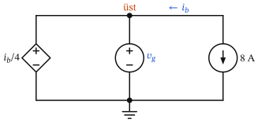
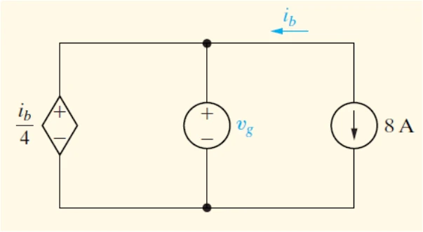

1. Paralel gerilim kaynakları: geçerli bağlantı için $v_g$ ve 8 A kaynağının gücü


a) Bağlantının geçerli olması için $v_g$ ne olmalıdır?
b) Bu $v_g$ değeri için 8 A kaynağına ait gücü bulunuz.
- 1
$i_b$'yi bul (sağ üst köşede KCL)
8 A kaynağının oku aşağı: kaynak, üst telden 8 A çekip alt tele basıyor. $i_b$ ise sağ üst köşeden sola doğru tanımlı. Sağ üst köşe düğümünde çıkan akımlar + : kaynaktan aşağı çıkan 8 A ve sola çıkan $i_b$.
\[\begin{aligned} 8 + i_b &= 0 \\ \boxed{i_b = -8\ \text{A}} &\qquad (\text{yani üst telde 8 A sağa akıyor}) \end{aligned}\] - 2
Geçerlilik: iki paralel gerilim kaynağında KVL
$i_b/4$ kaynağı ile $v_g$ kaynağının oluşturduğu sol gözü saat yönünde dolaşalım (sol alttan başla). $i_b/4$ kaynağında önce − → $-\tfrac{i_b}{4}$; $v_g$ kaynağında aşağı inerken önce + → $+v_g$. KVL'nin sağlanması için iki gerilim eşit olmalı; aksi halde bağlantı geçersizdir (ideal kaynaklar sonsuz akım isterdi).
\[\begin{aligned} -\frac{i_b}{4} + v_g &= 0 \\ v_g &= \frac{i_b}{4} = \frac{-8}{4} \\ \boxed{v_g = -2\ \text{V}} & \end{aligned}\]Kural (ÇY1): paralel gerilim kaynaklarının polariteleri ve büyüklükleri aynı olmalı; seri akım kaynaklarının yönü ve büyüklüğü aynı olmalı.
- 3
8 A kaynağının gerilimi
8 A kaynağı da aynı iki düğüme bağlı, bu yüzden üzerindeki gerilim (üst − alt) $v_g$'dir. Kaynağın + ucunu üstte kabul edelim: $v = -2$ V (üst düğüm alttan 2 V daha düşük).
\[v_{8\text{A}} = v_{\text{üst}} - v_{\text{alt}} = v_g = -2\ \text{V}\] - 4
8 A kaynağının gücü (pasif işaret kuralı)
8 A akım kaynağın içinden yukarıdan aşağı akıyor, yani + kabul ettiğimiz üst uçtan giriyor → $p = +v\,i$. Sonuç negatif çıkarsa kaynak güç üretir.
\[\begin{aligned} p_{8\text{A}} &= +v_{8\text{A}}\cdot 8 = (-2)(8) \\ &= \boxed{-16\ \text{W}} \qquad (\text{16 W üretir / verir}) \end{aligned}\] - 5
Kontrol: $\sum p = 0$
Paralel iki gerilim kaynağının akımlarını ayrı ayrı bulamayız (8 A'yı aralarında nasıl paylaştıkları belirsiz); soru da bu yüzden yalnız 8 A kaynağını soruyor. Ama toplamlarını bulabiliriz. $i_1$, $i_2$: $i_b/4$ ve $v_g$ kaynaklarında aşağı akan akımlar olsun. Üst düğümde KCL (çıkan +):
\[\begin{aligned} i_1 + i_2 + 8 &= 0 \;\Rightarrow\; i_1 + i_2 = -8\ \text{A} \\ p_1 + p_2 &= v_g\,i_1 + v_g\,i_2 = v_g\,(i_1 + i_2) = (-2)(-8) = +16\ \text{W} \\[4pt] \sum p &= -16 + 16 = \boxed{0} \end{aligned}\]
Bu soruda nelere dikkat etmeli? (Püf noktaları & sık yapılan hatalar)
- $i_b$'nin oku sola bakıyor: $i_b = -8$ A. $+8$ alırsan $v_g = +2$ V ve 8 A kaynağı '16 W emiyor' çıkar — ikisi de yanlış.
- Akım kaynağının gerilimini kaynak belirlemez; paralel bağlı elemanlar belirler (burada $v_g$).
- Paralel gerilim kaynaklarının tek tek akımları ve güçleri belirsizdir; yalnız toplamları bulunur.